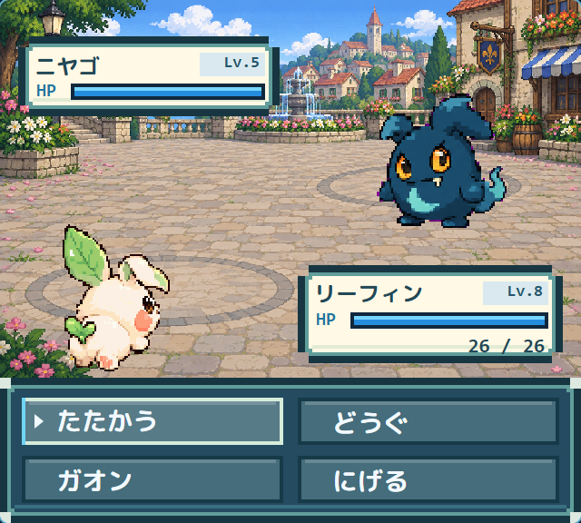

草原
ウリボンLv.21〜25
タヌポンLv.21〜25
きみの「わからない」を、いっしょに解決！
ガオンをさがす。なかまをそだてる。
困ったときは、このガイドをひらこう！
200種類のガオンに会いにいこう！
01 · まよったら、ここから
いまいるところをえらぼう。できたことには、チェックをつけてね。後半の章には物語の結末も載っています。
💡「試験」は、きみとなかまの力をためすチャレンジのこと。
チェックはこのブラウザーに保存。ゲームのセーブとは別だよ。
対戦前にチェック
ライバルは、迷彩ジャケットの少年。図鑑をくれるヤノケンとは別の人物です。場所を開くと、条件と相手のガオンを確認できます。

冒険のはじめに会話。ロッズで勝った後は現れない。
ガオンを捕まえた後に町へ入る。元気な仲間が必要。
ロッズでの勝利後、マリンタウンを訪れてから町の外へ出る。
マリンでの勝利後。ライバルに自分から話しかける。
ラーデンでの勝利後、町へ入る。
レスレでの勝利後。バトルはなく、ハイパーラグ10個を受け取る。
レスレでの勝利後、町へ入る。ヤノケンとの勝負は別のイベント。
ギャラクシーのライバル戦に勝利済みであること。勝利後は次の日曜0:00（日本時間）に再戦可能。
物語クリア後。10戦目以降の通常抽選で15%の確率で登場する。50戦ごとのヤノケン戦、100戦ごとのスイスはかせ戦が優先される。
手持ちから3匹を選んで挑戦。Lv.50未満の仲間はレベルが上がらないので注意。勝利ごとに全回復する。通常のライバル戦と、このタワー内のライバル戦では別の曲が流れる。
ライバルが出ないときは、ひとつ前のライバル戦に勝ったか、元気な仲間がいるかを確認。発電所とリーフタウンでは話しかけよう。負けた場合は、回復して再挑戦できます。
02 · お気に入りをみつけよう
絵をおすと、会える場所・進化・おぼえるわざがわかるよ。
ガオンをよみこんでいるよ…
場所は公開中のマップをもとに表示。会える時間や、ぼうけんを進める条件があるよ。
絵をならべた「ガオン図鑑」もみる →新しい5エリアに対応
草原 → 林 → 水辺 → 花畑 → 丘へ。エリアごとに出るガオンが変わります。
5エリアで合計10種類を捕まえ、育て屋でも1匹を誕生させたら、レスレタウンの町長タカラダに報告しよう。
03 · なかまとのチームワーク
同じタイプばかりだと、苦手な相手がいるよ。ちがうタイプのなかまや、わざをえらんでみよう。
１種類のガオンが、レベルに合わせて約20個のわざをおぼえるよ。バトルで使うのは４つ。新しくおぼえるときに、入れかえられるよ。
 3
3ロッズタウンの黄色い屋根の「思い出し屋」へ。レミに話しかけると、いまのレベルまでにおぼえるわざを思い出せるよ。
わざのタイプと、相手のタイプをえらんでね。
相手にタイプが２つあるときは、両方えらぼう。
ぶつりわざは「こうげき」、とくしゅわざは「とくこう」の強さを使うよ。なかまの得意な方に合うわざをえらんでみよう。
04 · 会いにいく日を決めよう
「時間が合う」だけでは、すぐに会えるとはかぎらないよ。出る場所もたしかめよう。
すべて日本時間。終わりの時刻ちょうどからは、出なくなるよ。
05 · 困ったときのヒント
はかせから「ラグネット」をもらおう。野生のガオンとのバトルで使えるよ。たいりょくを少なくすると、つかまえやすくなるよ。ただし、倒してしまう前に使ってね。
試験の相手や、ほかのトレーナーのガオンはつかまえられないよ。
ガオン病院の受付カウンター越しに看護師へ話しかけて休もう。ぼうけんのはじめは、自分の家のお母さんにも休ませてもらえるよ。バトルの前には、くすりも用意しておこう。
場所、曜日、時間をたしかめてみよう。なかなか出ないガオンもいるよ。「野生で会う場所がない」ときは、進化やイベントのヒントをみよう。
ハヤナギとカゲナギは、野生には出ないよ。
ガオンに出会ったときに、そのガオンがえらばれる割合のこと。たとえば１％は、100回会えば必ず１回出る、という意味ではないよ。
ここから先は、クリア後のお話だよ。